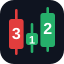

יומן מסחר
רווח/הפסד, לוח שנה וסטטיסטיקות אישיות
📅 לוח שנה
📈 עקומת הון
📋 עסקאות

סקירת שוק בזמן אמת, סורק תבניות Strat, סקטורים, גאפרים ומועדפים אישיים — והכול במקום אחד. בנוסף: יומן מסחר אישי לניתוח הביצועים שלך.
מדדים, סקטורים, מדדי רוחב ו-VIX — תמונת שוק מלאה בזמן אמת לפי The Strat.
חפש תבניות Strat לפי טיימפריים, סוג נר וצורה — כולל סורקי קהילה.
בחר מניות למעקב וצור רשימת מעקב אישית שנשמרת בענן.
העלה דוח ברוקר וקבל דשבורד רווח/הפסד, לוח שנה וסטטיסטיקות.